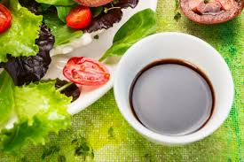
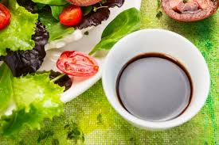

Pan butter sauce
What Is a Pan Sauce? The pan sauce came into existence for two reasons: to make sure that none of the rendered fat or crunchy pan drippings from seared meat goes to waste, and to give us a way of making that same meat even more amazing. You use liquid — usually a combination of wine and stock — to deglaze the pan, and then add a little butter to make things rich. If you’d like a thicker, creamier sauce, whisking in a little cornstarch or flour will do the job. Spoon that over your steak and try not to swoon.
When Do You Make a Pan Sauce? Make a pan sauce whenever you’ve cooked something that leaves caramelized bits in the pan. in Typically, you make a pan sauce to go with steaks, pork chops, chicken, and the like, but there’s no reason you can’t make a pan sauce for pan-seared vegetables, seared tofu or tempeh, or any other food you’ve cooked in a pan.
INGREDIENTS
1 tablespoon olive oil (or pan drippings)
1 whole shallot, minced (optional)
1/4 cup red wine, white wine, beer, cider or other flavorful alcohol
3/4 cup vegetable stock, chicken stock, or beef stock, plus extra as needed 2 tablespoons butter or a splash of cream
1 1/2 teaspoons cornstarch, whisked with 2 tablespoons water or stock (optional) Salt and pepper, to taste
A skillet or other pan
Measuring cups
Spatula
Whisk
INSTRUCTIONS
Clear — but don't clean! — the pan: Once you've finished using your pan to cook the main dish, transfer the cooked food to a separate plate or tray. Do not clean the pan. Pour off all but a tablespoon of leftover cooking oil or rendered fat from the pan.
Sauté the shallots (optional): Add enough oil to the pan to make about 1 tablespoon of total fat when combined with the pan drippings. Set the pan over medium-high heat and sauté the shallots until they've softened and turned golden, 2 to 3 minutes. If you don't have (or don't like!) shallots, you can skip this step and still make a great pan sauce; the shallots deepen the overall flavor of the sauce. Also, see the variations below for more ideas for adding flavor at this stage.
Pour in the red wine or other alcohol: With the pan on medium-high heat, pour in the wine or other alcohol. As the alcohol simmers, scrape up any crispy browned bits from the bottom of the pan with the spatula. (If you prefer not to use alcohol, you can replace the liquid in this step with more stock.)
Reduce the wine by about half: Let the wine or other alcohol reduce by roughly half, about 3 minutes. The pan should just barely be starting to look dry. It's not an exact science, though, so don't worry; just go on to the next step sometime before the pan is totally dry.
Pour in the stock: Pour the stock into the pan and stir it into the wine. Let it come to a rapid simmer.
Reduce the liquid to about 1/2 cup: Let the liquid in the pan reduce to about 1/2 cup, 3 to 5 minutes. Again, you don't need to be precise here; it's ok to guesstimate. Tilt the pan every so often to gauge how much liquid has evaporated and when it's reduced by about half, you're good.
Stir in the butter or cream: Turn down the heat to medium-low and stir in the butter or cream. Whisk gently until the butter has completely melted.
Whisk in the cornstarch (optional): For a thicker, creamier sauce, whisk in the cornstarch. Don't forget to whisk the cornstarch with 2 tablespoons of water first; this helps prevents clumps. Let the sauce simmer for another few seconds, until thickened.
Correcting a too-thick sauce: If your liquid reduces too much or the sauce becomes too thick, whisk in a little extra stock to reach a thinner, more pourable consistency.
Pour the sauce into a measuring cup or serving dish: Transfer the sauce to a measuring cup (for easy pouring) or serving dish. Taste and stir in a little salt and pepper to taste. Enjoy! Pan sauces are at their very best when used right away. Drizzle it over your meal or let guests spoon some for themselves.